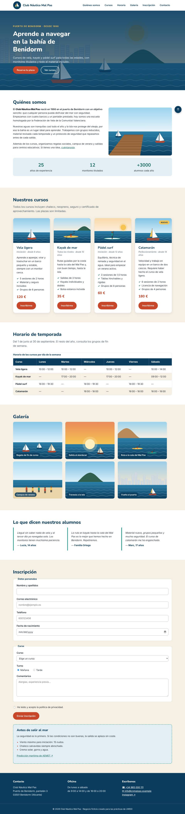
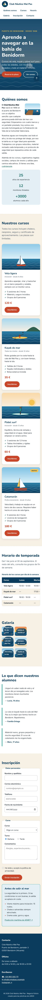

- UP
- UP3
- Criterios
- RA2 · 2h
- Duración
- 2 sesiones
- Agrupamiento
- Individual
- Entrega
- Aules · ZIP + URL del repositorio
- Tipo
- Desarrollo · formativa
Objetivos
- Distinguir las propiedades del contenedor flex y las de sus elementos.
- Alinear y repartir el espacio con
justify-content,align-itemsygap. - Hacer filas que bajan de línea con
flex-wrapy elementos que crecen conflex. - Anidar contenedores flex para alinear el contenido de una tarjeta.
- Sustituir técnicas antiguas (
inline-block,line-height) por Flexbox.
Recursos
- Punto de partida: tu PP 3.3. La serie entera trabaja sobre un único fichero HTML, la web del Club Náutico Mal Pas (descargar en ZIP), que no se modifica: cada práctica añade una capa a la misma hoja
css/estilos.css. - Teoría de la UP3, sección 8 (diapositivas 58 – 64).
- Ejemplo guiado EG 3.2 · Tarjetas de habitaciones (pasos 6 – 10) y Flexbox Froggy (en español).
- Laboratorio CSS: contenedor flex y elementos flex.
- Plantilla LEEME-plantilla.md.
Resultado esperado
Así debe quedar la página al terminar esta práctica. Desplaza las capturas para verla entera.


1Calentamiento y copia
Copia la carpeta de tu práctica anterior como lmsgi/UP3/PP3.4/ en tu repositorio y sigue trabajando sobre la misma hoja css/estilos.css. No cambies el HTML. Si la práctica anterior no te funciona, pide al profesor su hoja de estilos para no quedarte atrás.
Antes de empezar, completa los 24 niveles de Flexbox Froggy y guarda una captura del último en el LEEME.md.
2Cabecera en una fila
Convierte .cabecera__fila en un contenedor flex: logotipo a la izquierda y menú a la derecha (justify-content: space-between), centrados en vertical, con gap y flex-wrap: wrap para que el menú baje si no cabe. La .marca será un inline-flex que alinea el logotipo con el nombre.
.cabecera__fila {
display: flex;
flex-wrap: wrap;
align-items: center;
/* … */
}3Menú y botones de la portada
Haz flex el ul del menú, con flex-wrap y un gap pequeño, y borra la regla .menu li { display: inline-block; } de la PP 3.3: ya no hace falta. Haz lo mismo con .portada__acciones para separar los dos botones con gap: 1rem.
4Tarjetas en fila
Borra el inline-block, el ancho y el margen provisionales de .tarjeta (PP 3.2) y haz flex el contenedor .tarjetas, con flex-wrap: wrap y gap: 1.5rem. Cada tarjeta parte de 15rem y puede crecer y encoger: flex: 1 1 15rem.
Ahora alinea los botones «Inscribirme» al fondo aunque los textos tengan distinta longitud. La tarjeta y su cuerpo son, a su vez, contenedores flex en columna:
.tarjeta {
display: flex;
flex-direction: column;
}
.tarjeta__cuerpo {
display: flex;
flex: 1;
flex-direction: column;
}
.tarjeta .boton {
align-self: flex-start;
margin-top: auto; /* empuja el botón al fondo */
}Estrecha la ventana hasta unos 900 px: ¿qué le pasa a la última tarjeta cuando se queda sola en su fila? Anótalo en el LEEME.md: lo resolverás con Grid en la PP 3.5. Experimenta con flex-grow, flex-basis y order en el laboratorio de elementos flex.
5Cifras, opiniones y pie
.datos: flex conflex-wrap,justify-content: space-around,gapy texto centrado; cadaliconflex: 1 1 10remy la cifra (strong) en bloque, encima de su texto. Borra elinline-blockde la PP 3.3..opiniones: flex conflex-wrapygap: 1.5rem; cada.opinionconflex: 1 1 18remy sin margen..pie__columnas: flex conflex-wrapygap: 2rem; cada.pie__bloqueconflex: 1 1 14rem.
6Formulario
Pon los radios del turno en fila con .formulario .opciones flex, flex-wrap y gap (borra el margin-right de las etiquetas de la PP 3.2). La casilla de privacidad (.campo--casilla) también es flex, con align-items: flex-start, para que el texto largo no se meta debajo de la casilla.
7Centrado perfecto
Centra la flecha del botón .subir con display: flex, align-items: center y justify-content: center. Explica en el LEEME.md por qué este centrado funciona aunque cambie el tamaño de la letra y el de line-height no.
8Valida y entrega
0 errores en los validadores. Comprueba la página a 1280, 1024 y 768 px. Commit: PP3.4: maquetación con Flexbox.
Niveles de realización
Básico
Pasos 1 – 4 y 8.
Estándar
Todos los pasos, con la observación de la última tarjeta y el centrado explicados.
Ampliación
Sin tocar el HTML, haz que la tarjeta «Nuevo» aparezca la primera con order y explica por qué no conviene abusar de esta propiedad (orden visual frente a orden del teclado y del lector de pantalla).
Antes de entregar, comprueba que…
- Logotipo y menú están en la misma fila en escritorio y el menú baja de línea si no cabe.
- No queda ningún
inline-blockde maquetación de las prácticas anteriores en menú, tarjetas ni cifras. - Las cuatro tarjetas tienen la misma altura y los botones «Inscribirme» están alineados al fondo.
- Opiniones y pie se reparten en columnas y bajan de línea en pantallas estrechas.
- Los radios del turno están en fila y la casilla de privacidad alineada con su texto.
- Validadores CSS y HTML: 0 errores.
- Declaración de uso de IA en
LEEME.md.
Entrega
Comprime la carpeta PP3.4 (con index.html, css/, img/ y LEEME.md) como PP3.4_Apellido_Nombre.zip, súbela a Aules y escribe en el comentario la URL de tu repositorio.
Uso de inteligencia artificial. Puedes usar asistentes de IA para entender un error o resolver una duda, pero no para hacer la práctica por ti. Si los usas, decláralo en el fichero LEEME.md de tu entrega (qué herramienta, para qué y qué cambiaste tú). Debes poder explicar y defender todo lo que entregues (instrumento IE6). Presentar código generado sin declararlo supone un 0 en la práctica (PD, apartado 6.5).
Evaluación
Práctica formativa de la serie progresiva de la UP3: no tiene nota propia, se revisa en clase con la lista de comprobación y prepara las prácticas calificables (PR 3.1 – 3.5) y el Proyecto 3. Trabaja el criterio 2h del RA2. El profesor puede pedirte que expliques cualquier regla de tu hoja (IE6).